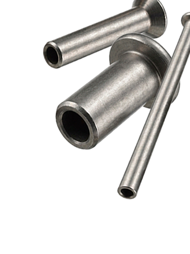
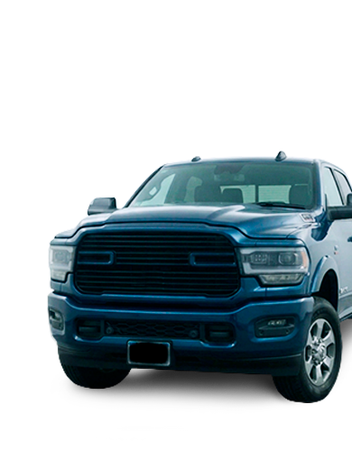
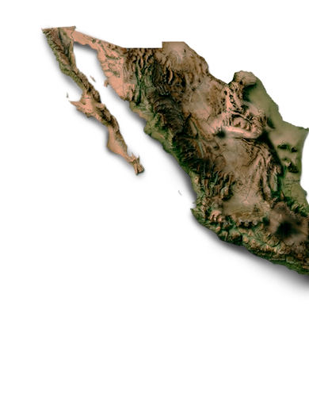

Scroll

Diseñamos tus
tornillos para
tus
necesidades
Más de 40 años de experiencia fabricando tornillos especiales, remaches, pernos y sujeciones en general, con maquinaria moderna y altamente especializada.
+40
Años de experiencia
N.L.
Monterrey, Nuevo León
+8 Billones
De Tornillos Producidos
0
Devoluciones
TORNILLOS ESPECIALES◆BIRLOS◆REMACHES SÓLIDOS◆PERNOS◆REMACHE SEMI-TUBULAR◆TORNILLOS PARA CORTINAS DE
ACERO◆TORNILLOS CARROCEROS◆TORNILLOS
FERRETEROS◆PERNOS PARA BISAGRAS◆TORNILLOS PARA LA INDUSTRIA ELÉCTRICA◆
Servicios
Fabricamos para
cada industria
Diseñamos tu tornillo y contamos con un amplio catálogo de acabados y tratamientos térmicos. Cotizamos sobre dibujo o muestra; si no lo fabricamos, lo desarrollamos.

Remaches
Remache Semi-Tubular
Fabricación de remache semi-tubular en Monterrey.

Pernos
Cortinas de Acero
Fabricación y venta de pernos para cortina de acero.

Tornillos
Carroceros
Fabricación de tornillos carroceros.

Todas las industrias
Industria Nacional
Tornillos y pernos para toda la industria nacional, de 1/8″ a 3/8″.